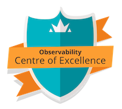

<!DOCTYPE html>
<html lang="en">

<head>
    <meta charset="UTF-8">
    <meta http-equiv="X-UA-Compatible" content="IE=edge,chrome=1" />
    <meta name="viewport"
        content="width=device-width, user-scalable=no, initial-scale=1.0, maximum-scale=1.0, minimum-scale=1.0">


    <title>OCoE Launch Pad</title>
    <meta name="description"
        content="Observability Centre of Excellence: Launch Pad">

    <link rel="stylesheet" href="vue.css">
    <style>
        /* Fix issue on mobile devices where a custom cover image goes off the screen. */
        section.cover.show {
            height: 100%;
        }

    </style>
    <!-- Custom theme stylesheet -->
    <link rel="stylesheet" href="theme.css">

    <!-- Plugins that are needed before app configuration. -->
    <script src="//unpkg.com/docsify-edit-on-github/index.js"></script>

</head>

<body>
    <div id="app"></div>

    <script>
        var repo = null

        window.$docsify = {
            name: '<br />Launch Pad<hr class="sidebar-divider" />', 
            repo: null,
            auto2top: true,
            coverpage: true,
            loadSidebar: false,
            subMaxLevel: 3,
            loadSidebar: true,

            // plugins: [
            //     EditOnGithubPlugin.create(
            //         repo + '/blob/master/docs/',
            //         null,
            //         '📝 Edit on GitHub',
            //     )
            // ],
        }

    </script>

    <!-- Docsify core -->
    <script src="//unpkg.com/docsify/lib/docsify.min.js"></script>

    <!-- Syntax highlighting -->
    <!-- Add prism-bash, prism-python, prism-javascript etc. as separate items to load highlighting for that language -->
    <script src="//cdn.jsdelivr.net/npm/prismjs/components/prism-markdown.min.js"></script>

</body>

</html>
